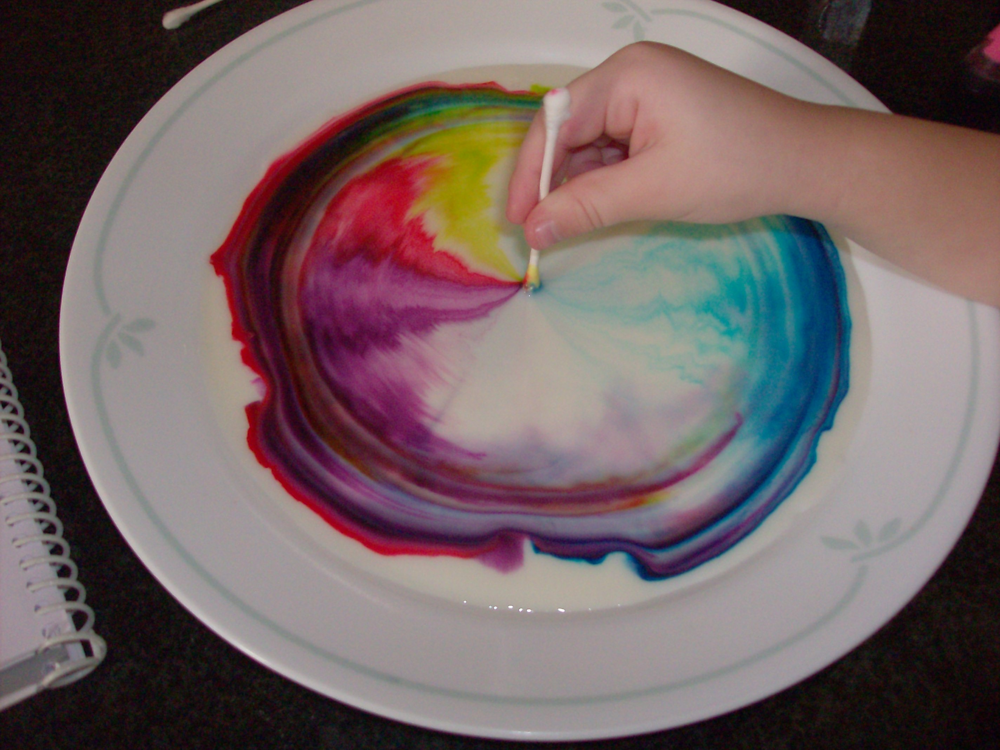

During class, we observed the effects soap had on both skim and whole milk. Using food coloring, we observed how the soap affected the solution in a colorful, twisty modern art piece. We also were introduced to the effect that soap had on surface tension of water. Click to learn about it.